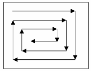
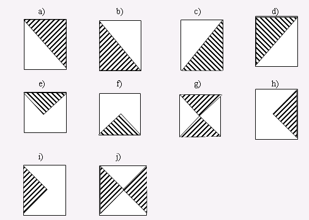

Ikki o’lchamli massivlar. Matritsalar
- Matritsani hosil qilish va uning elementlarini chiqarish. (16 ta masala)
- Matritsa elementlarini taxlil qilish. (30 ta masala)
- Matritsani o’zgartirish. (33 ta masala)
- Kvadrat matritsaning diagonallari. (21 ta masala)
1. Matritsani hosil qilish va uning elementlarini chiqarish
Matritsani hosil qilishda uning o’lchamlari 10 x 10 dan ochmaydi deb qaraladi.
Matrix1. m va n butun musbat sonlari berilgan. m x n o’lchamli matritsani shunday hosil qilingki, uning har bir i – satri elementlari 10 * i ga teng bo’lsin. (i =0, 1, …, m - 1)
Matrix2. m va n butun musbat sonlari berilgan. m x n o’lchamli matritsani shunday hosil qilingki, uning har bir j – ustuni elementlari 5 * j ga teng bo’lsin. (j =0, 1, …, n - 1)
Matrix3. m va n butun musbat sonlari va m ta butun sonlar to’plmi berilgan. m x n o’lchamli matritsani shunday hosil qilingki, uning har bir ustuni kiritilgan m ta sondan iborat bo’lsin.
Matrix4. m va n butun musbat sonlari va n ta butun sonlar to’plmi berilgan. m x n o’lchamli matritsani shunday hosil qilingki, uning har bir satri kiritilgan n ta sondan iborat bo’lsin.
Matrix5. m, n va d butun sonlari va m ta butun sonlar to’plmi berilgan. m x n o’lchamli matritsani shunday hosil qilingki, uning birinchi ustuni kiritilgan m ta sondan iborat bo’lsin. Qolgan ustunlari, o’zidan bir oldingi ustunning o’zi turgan satri elementi qiymatiga d sonini qo’shishdan hosil bo’lsin. (Natijada har bir satrda arifmetik progressiya hosil bo’ladi)
Matrix6. m, n va q butun sonlari va m ta butun sonlar to’plmi berilgan. m x n o’lchamli matritsani shunday hosil qilingki, uning birinchi ustuni kiritilgan m ta sondan iborat bo’lsin. Qolgan ustunlari, o’zidan bir oldingi ustunning o’zi turgan satri elementi qiymatiga q sonini ko’paytirishdan hosil bo’lsin. (Natijada har bir satrda geometrik progressiya hosil bo’ladi)
Matrix7. m x n o’lchamli matritsa va k soni berilgan (0 <= k < m ). Matritsaning k – satrini chiqaruvchi programma tuzilsin.
Matrix8. m x n o’lchamli matritsa va k soni berilgan (0 <= k < n ). Matritsaning k – ustuni elementlarini chiqaruvchi programma tuzilsin.
Matrix9. m x n o’lchamli matritsa berilgan. Matritsaning 2 ga karrali (0, 2, 4, … ) satrlarini chiqaruvchi programma tuzilsin. Shart operatori ishlatilmasin.
Matrix10. m x n o’lchamli matritsa berilgan. Matritsaning toq indeksli ustunlarini (1, 3, 5, …) chiqaruvchi programma tuzilsin. Shart operatori ishlatilmasin.
Matrix11. m x n o’lchamli matritsa berilgan. Matritsaning elementlarini quyidagicha chiqaruvchi programma tuzilsin. 0 – satr chapdan o’ngga, 1 – satr o’ngdan chapga, 2 – satr chapdan o’ngga, …
Matrix12. m x n o’lchamli matritsa berilgan. Matritsaning elementlarini quyidagicha chiqaruvchi programma tuzilsin. 0 – ustun tepadan pastga, 1 – ustun pastdan tepaga, 2 – ustun tepadan pastga, …
Matrix13. MxM o'lchamli kvadrat matritsa A berilgan. A0,0 elementdan boshlab martitsa elementlari quyidagicha chiqarilsin (burchak hosil qilgan holda): birinchi satrning barcha elementlari; oxirgi ustunning barcha elementlari (birinchi elementidan tashqari, chunki u chiqarilgan); ikkinchi satrning qolgan elementlari; oxirdan bir oldingi ustunning qolgan elementlari; va xakazo; oxirda AM-1,0 element chiqadi.
Matrix14. MxM o'lchamli kvadrat matritsa A berilgan. A0,0 elementdan boshlab martitsa elementlari quyidagicha chiqarilsin (burchak hosil qilgan holda): birinchi ustunning barcha elementlari; oxirgi satrning barcha elementlari (birinchi elementidan tashqari, chunki u chiqarilgan); ikkinchi ustunning qolgan elementlari; oxirdan bir oldingi satrning qolgan elementlari; va xakazo; oxirda A0,M-1 element chiqadi.
Matrix15. NxN o'lchamli kvadrat matritsa A hosil qilinsin. A0,0 elementdan boshlab, soat strelkasi bo'yicha martitsa elementlariga 1, 2, 3, ..., N2 gacha bo'gan sonlar o'zlashtirilsin. Rasmga qarang.

Matrix16. NxN o'lchamli kvadrat matritsa A hosil qilinsin. A0,0 elementdan boshlab, soat strelkasiga qarama - qarshi ravishda martitsa elementlariga 1, 2, 3, ..., N2 gacha bo'gan sonlar o'zlashtirilsin. Matrix15 masalasiga teskari yo'nalishda.
2. Matritsa elementlarini taxlil qilish
Matrix17. m x n o’lchamli matritsa va k soni berilgan (0 <= k < m ). Matritsaning k – satri elementlari yig’indisini va ko’paytmasini chiqaruvchi programma tuzilsin.
Matrix18. m x n o’lchamli matritsa va k soni berilgan (0 <= k < n ). Matritsaning k – ustuni elementlari yig’indisini va ko’paytmasini chiqaruvchi programma tuzilsin.
Matrix19. m x n o’lchamli matritsa berilgan. Matritsaning har bir satri elementlari yig’indisini chiqaruvchi programma tuzilsin.
Matrix20. m x n o’lchamli matritsa berilgan. Matritsaning har bir ustuni elementlari ko’paytmasini chiqaruvchi programma tuzilsin.
Matrix21. m x n o’lchamli matritsa berilgan. Matritsaning har bir satri uchun
toq indeksli ustunlarining (1, 3, 5, …) o’rta arifmetigini chiqaruvchi programma tuzilsin. Shart operatori ishlatilmasin.
Matrix22. m x n o’lchamli matritsa berilgan. Matritsaning har bir ustuni uchun
2 ga karrali satrlarining (0, 2, 4, …) yig’indisini chiqaruvchi programma tuzilsin. Shart operatori ishlatilmasin.
Matrix23. m x n o’lchamli matritsa berilgan. Matritsa har bir satrining eng kichik elementini chiqaruvchi programma tuzilsin.
Matrix24. m x n o’lchamli matritsa berilgan. Matritsa har bir ustunining eng katta elementini chiqaruvchi programma tuzilsin.
Matrix25. m x n o’lchamli matritsa berilgan (faqat musbat sonlar). Elementlari yig’indisi eng katta bo’lsan satrining indeksini va shu sart elementlari yig’indisini chiqaruvchi programma tuzilsin.
Matrix26. m x n o’lchamli matritsa berilgan. Elementlari ko’paytmasi eng kichik bo’lsan ustunning indeksini va shu ko’paytmani chiqaruvchi programma tuzilsin.
Matrix27. m x n o’lchamli matritsa berilgan. Elementlari yig’indisi eng kichik bo’lsan satrining, eng katta elementini chiqaruvchi programma tuzilsin.
Matrix28. m x n o’lchamli matritsa berilgan. Elementlari yig’indisi eng katta bo’lsan ustunning, eng kichik elementini chiqaruvchi programma tuzilsin.
Matrix29. m x n o’lchamli matritsa berilgan. Har bir satrda, shu satr o’rta arifmetigidan kichik bo’lgan elementlar sonini chiqaruvchi programma tuzilsin.
Matrix30. m x n o’lchamli matritsa berilgan. Har bir ustunda, shu ustun o’rta arifmetigidan katta bo’lgan elementlar sonini chiqaruvchi programma tuzilsin.
Matrix31. m x n o’lchamli matritsa berilgan. Matritsa barcha elementlari o’rta arifmetigiga, o’rta arifmetigi eng yaqin bo’lgan satr va ustun nomerini chiqaruvchi programma tuzilsin.
Matrix32. m x n o’lchamli matritsa berilgan. Musbat va manfiy elementlari soni teng bo’lgan (nol inobatga olinmaydi) birinchi uchragan satr nomerini aniqlovchi programma tuzilsin. Agar bunday satr bo’lmasa, “Bunday satr yo’q” deb chiqarilsin.
Matrix33. m x n o’lchamli matritsa berilgan. Musbat va manfiy elementlari soni teng bo’lgan (nol inobatga olinmaydi) oxirgi ustun nomerini aniqlovchi programma tuzilsin. Agar bunday ustun bo’lmasa, “Bunday ustun yo’q” deb chiqarilsin.
Matrix34. m x n o’lchamli matritsa berilgan. Faqat juft sonlardan iborat bo’lgan oxirgi satr nomerini aniqlovchi programma tuzilsin. Agar bunday satr bo’lmasa, “Bunday satr yo’q” deb chiqarilsin.
Matrix35. m x n o’lchamli matritsa berilgan. Faqat toq sonlardan iborat bo’lgan birinchi ustun nomerini aniqlovchi programma tuzilsin. Agar bunday ustun bo’lmasa, “Bunday ustun yo’q” deb chiqarilsin.
Matrix36. m x n o’lchamli matritsa berilgan. Massivning har xil satrlari o’xshash deyiladi, agar satrlardagi sonlar bir xil bo’lsa. Dastlabki satrga o’xshash bo’lgan satrlar sonini aniqlovchi programma tuzilsin.
Matrix37. m x n o’lchamli matritsa berilgan. Massivning har xil ustunlari o’xshash deyiladi, agar ustunlardagi sonlar bir xil bo’lsa. Oxirgi ustunga o’xshash bo’lgan ustunlar sonini aniqlovchi programma tuzilsin.
Matrix38. m x n o’lchamli matritsa berilgan. Elementlari har xil bo’lgan satrlar sonini aniqlovchi programma tuzilsin.
Matrix39. m x n o’lchamli matritsa berilgan. Elementlari har xil bo’lgan ustunlar sonini aniqlovchi programma tuzilsin.
Matrix40. m x n o’lchamli matritsa berilgan. Bir xil elementlar soni eng ko’p bo’lgan oxirgi satrni aniqlovchi programma tuzilsin.
Matrix41. m x n o’lchamli matritsa berilgan. Bir xil elementlar soni eng ko’p bo’lgan birinchi ustunni aniqlovchi programma tuzilsin.
Matrix42. m x n o’lchamli matritsa berilgan. Elementlari o’sish tartibida kiritilgan satrlar sonini aniqlovchi programma tuzilsin.
Matrix43. m x n o’lchamli matritsa berilgan. Elementlari kamayish tartibida kiritilgan ustunlar sonini aniqlovchi programma tuzilsin.
Matrix44. m x n o’lchamli matritsa berilgan. Elementlari kamayish yoki o’sish tartibida kiritilgan satrlar orasidan, eng kichik qiymatni aniqlovchi programma tuzilsin. Agar tartiblangan satr bo’lmasa, nol chiqarilsin.
Matrix45. m x n o’lchamli matritsa berilgan. Elementlari kamayish yoki o’sish tartibida kiritilgan ustunlar orasidan, eng katta qiymatni aniqlovchi programma tuzilsin. Agar tartiblangan ustun bo’lmasa, nol chiqarilsin.
Matrix46. m x n o’lchamli matritsa berilgan. O’zi turgan satrda eng kattasi va o’zi turgan ustunda eng kichigi bo’lsan elementni aniqlovchi programma tuzilsin. Agar bunday element bo’lmasa, nol chiqarilsin.
3. Matritsani o’zgartirish
Bu bo’limdagi masalalarni yechishda qo’shimcha matritsadan foydalanmang. (Matrix74 va Matrix75 da foydalanish mumkin)
Matrix47. m x n o’lchamli matritsa va k1, k2 butun sonlari berilgan (0 <=k1 < k2 < m). k1 va k2 satr elementlarini almashtiruvchi programma tuzilsin.
Matrix48. m x n o’lchamli matritsa va k1, k2 butun sonlari berilgan (0 <= k1 < k2 < n). k1 va k2 ustun elementlarini almashtiruvchi programma tuzilsin.
Matrix49. m x n o’lchamli matritsa berilgan. Har bir satrdagi eng kichik va eng katta element o’rinlarini almashtiruvchi programma tuzilsin.
Matrix50. m x n o’lchamli matritsa berilgan. Har bir ustundagi eng kichik va eng katta element o’rinlarini almashtiruvchi programma tuzilsin.
Matrix51. m x n o’lchamli matritsa berilgan. Matritsadagi eng kichik va eng katta element joylashgan satrlar o’rinlarini almashtiruvchi programma tuzilsin.
Matrix52. m x n o’lchamli matritsa berilgan. Matritsadagi eng kichik va eng katta element joylashgan ustunlar o’rinlarini almashtiruvchi programma tuzilsin.
Matrix53. m x n o’lchamli matritsa berilgan. Matritsaning dastlabki ustuni bilan faqat musbat elementlardan tashkil topgan eng oxirgi ustunni almashtiruvchi programma tuzilsin. Agar bunday ustun bo’lmasa, matritsa o’zgarishsiz qoldirilsin.
Matrix54. m x n o’lchamli matritsa berilgan. Matritsaning oxirgi ustuni bilan faqat manfiy elementlardan tashkil topgan eng birinchi ustunni almashtiruvchi programma tuzilsin. Agar bunday ustun bo’lmasa, matritsa o’zgarishsiz qoldirilsin.
Matrix55. m x n o’lchamli matritsa berilgan (m juft son). Matritsaning teng yarmidan yuqorisi va pastini almashtiruvchi programma tuzilsin.
Matritsa |
Natija |
1 1 1
2 2 2
3 3 3
4 4 4 |
3 3 3
4 4 4
1 1 1
2 2 2 |
Matrix56. m x n o’lchamli matritsa berilgan (n juft son). Matritsaning teng yarmidan chap va ong qismini almashtiruvchi programma tuzilsin.
Matritsa |
Natija |
1 2 3 4
1 2 3 4
1 2 3 4 |
3 4 1 2
3 4 1 2
3 4 1 2 |
Matrix57. m x n o’lchamli matritsa berilgan (n va m juft son). Matritsa teng 4 qismga bo’lingan. 1 – chap yuqori, 2 – ong yuqori, 3 – chap past, 4 – ong past. 1 – va 4 qismini almashtiruvchi programma tuzilsin.
Matritsa |
Natija |
1 2
3 4
5 6
7 8 |
6 2
8 4
5 1
7 3 |
Matrix58. m x n o’lchamli matritsa berilgan (n va m juft son). Matritsa teng 4 qismga bo’lingan. 1 – chap yuqori, 2 – ong yuqori, 3 – chap past, 4 – ong past. 2 – va 3 qismini almashtiruvchi programma tuzilsin.
Matritsa |
Natija |
1 2
3 4
5 6
7 8 |
1 5
3 7
2 6
4 8 |
Matrix59. m x n o’lchamli matritsa berilgan. Matritsa elementlarini quyidagicha almashtiring: 0 va m - 1 satr elementlari almashsin, 1 va m - 2 satr elementlari almashsin va hakazo.
Matritsa |
Natija |
1 2 3
4
5 6
7 8 9 |
7 8 9
4 5 6
1 2 3
|
Matrix60. m x n o’lchamli matritsa berilgan. Matritsa elementlarini quyidagicha almashtiring: 0 va n - 1 ustun elementlari almashsin, 1 va n - 2 ustun elementlari almashsin va hakazo.
Matritsa |
Natija |
1 2
3
4
5 6
7 8 9
|
3 2 1
6 5 4
9 8 7
|
Matrix61. m x n o’lchamli matritsa va k butun soni berilgan (0<= k <m) . Matritsaning k – satrini o’chiruvchi programma tuzilsin.
Matrix62. m x n o’lchamli matritsa va k butun soni berilgan (0<= k <n) . Matritsaning k – ustunini o’chiruvchi programma tuzilsin.
Matrix63. m x n o’lchamli matritsa berilgan. Matritsaning eng kichik elementi joylashgan satrini o’chiruvchi programma tuzilsin.
Matrix64. m x n o’lchamli matritsa berilgan. Matritsaning eng katta elementi joylashgan ustunni o’chiruvchi programma tuzilsin.
Matrix65. m x n o’lchamli matritsa berilgan. Matritsaning faqat musbat elementlardan tashkil topgan birinchi uchragan ustunini o’chiruvchi programma tuzilsin.
Matrix66. m x n o’lchamli matritsa berilgan. Matritsaning faqat manfiy elementlardan tashkil topgan oxirgi uchragan ustunini o’chiruvchi programma tuzilsin.
Matrix67. m x n o’lchamli matritsa berilgan. Matritsaning faqat musbat elementlardan tashkil topgan barcha ustunlarni o’chiruvchi programma tuzilsin.
Matrix68. m x n o’lchamli matritsa va k butun soni berilgan (0<= k <m). Matritsaning k – satri oldidan elementlari qiymati nolga teng bo’lgan satr qo’shuvchi programma tuzilsin.
Matrix69. m x n o’lchamli matritsa va k butun soni berilgan (0<= k <n). Matritsaning k – ustunidan keyin elementlari qiymati birga teng bo’lgan ustun qo’shuvchi programma tuzilsin.
Matrix70. m x n o’lchamli matritsa berilgan. Matritsaning eng katta elementi joylashgan satrdan keyin, yana shunday satr qo’shuvchi programma tuzilsin.
Matrix71. m x n o’lchamli matritsa berilgan. Matritsaning eng kichik elementi joylashgan ustundan keyin, yana shunday ustun qo’shuvchi programma tuzilsin.
Matrix72. m x n o’lchamli matritsa berilgan. Matritsaning faqat musbat elementlardan tashkil topgan birinchi uchragan ustunidan oldin, elementlari qiymati birga teng bo’lgan ustun qo’shuvchi programma tuzilsin. Agar bunday ustun bo’lmasa, matritsa o’zgarishsiz chiqarilsin.
Matrix73. m x n o’lchamli matritsa berilgan. Matritsaning faqat manfiy elementlardan tashkil topgan oxirgi uchragan ustunidan keyin, elementlari qiymati nolga teng bo’lgan ustun qo’shuvchi programma tuzilsin. Agar bunday ustun bo’lmasa, matritsa o’zgarishsiz chiqarilsin.
Matrix74. m x n o’lchamli matritsa berilgan. Matritsaning barcha lokal minimum qiymatlarini nolga almashtiruvchi programma tuzilsin. Element lokal minimum deyiladi, agar u barcha qo’shnilaridan kichik bo’lsa. Yordamchi matritsadan foydalanishga ruhsat etiladi.
Matrix75. m x n o’lchamli matritsa berilgan. Matritsaning barcha lokal maksimum qiymatlarini nolga almashtiruvchi programma tuzilsin. Element lokal maksimum deyiladi, agar u barcha qo’shnilaridan katta bo’lsa. Yordamchi matritsadan foydalanishga ruhsat etiladi.
Matrix76. m x n o’lchamli matritsa berilgan. Matritsaning satrlarini shunday o'zgartiringki, natijada nolinchi ustun elementlari o’sish tartibida joylashtirilsin.
Matrix77. m x n o’lchamli matritsa berilgan. Matritsaning ustunlarini shunday o'zgartiringki, natijada oxirgi satri elementlari kamayish tartibida joylashtirilsin.
Matrix78. m x n o’lchamli matritsa berilgan. Matritsa satrlarini shunday tartiblangi, satrlarning minimal elementlari kamayish tartibida bo'lsin.
Matrix79. m x n o’lchamli matritsa berilgan. Matritsa ustunlarini shunday tartiblangi, ustunlarning maksimal elementlari o'sish tartibida bo'lsin.
4. Kvadrat matritsaning diagonallari
Matrix80. m x m o’lchamli kvadrat matritsa berilgan. Matritsaning asosiy dioganali elementlari yig’indisini chiqaruvchi programma tuzilsin.
Matrix81. m x m o’lchamli kvadrat matritsa berilgan. Matritsaning yordamchi dioganali elementlari o’rta arifmetigini chiqaruvchi programma tuzilsin.
Matrix82. m x m o’lchamli kvadrat matritsa berilgan. Matritsaning asosiy dioganaliga parallel bo'lgan har bir dioganal elementlari yig'indisini aniqlovchi programma tuzilsin. Bir elementli dioganal A0,M-1 dan boshlansin.
Matrix83. m x m o’lchamli kvadrat matritsa berilgan. Matritsaning yordamchi dioganaliga parallel bo'lgan har bir dioganal elementlari yig'indisini aniqlovchi programma tuzilsin. Bir elementli dioganal A0,0 dan boshlansin.
Matrix84. m x m o’lchamli kvadrat matritsa berilgan. Matritsaning asosiy dioganaliga parallel bo'lgan har bir dioganal elementlari o'rta arifmetigini hisoblovchi programma tuzilsin. Bir elementli dioganal A0,M-1 dan boshlansin.
Matrix85. m x m o’lchamli kvadrat matritsa berilgan. Matritsaning yordamchi dioganaliga parallel bo'lgan har bir dioganal elementlari o'rta arifmetigini hisoblovchi programma tuzilsin. Bir elementli dioganal A0,0 dan boshlansin.
Matrix86. m x m o’lchamli kvadrat matritsa berilgan. Matritsaning asosiy dioganaliga parallel bo'lgan har bir dioganali elementlarining eng kichigini aniqlovchi programma tuzilsin. Bir elementli dioganal A0,M-1 dan boshlansin.
Matrix87. m x m o’lchamli kvadrat matritsa berilgan. Matritsaning yordamchi dioganaliga parallel bo'lgan har bir dioganali elementlarining eng kattasini aniqlovchi programma tuzilsin. Bir elementli dioganal A0,0 dan boshlansin.
Matrix88. m x m o’lchamli kvadrat matritsa berilgan. Matritsaning asosiy dioganalida va undan pastda joylashgan barcha elementlarini nolga almashtiruvchi programma tuzilsin. Shart operatoridan foydalanmang.
Matrix89. m x m o’lchamli kvadrat matritsa berilgan. Matritsaning yordamchi dioganalida va undan yuqorida joylashgan barcha elementlarini nolga almashtiruvchi programma tuzilsin. Shart operatoridan foydalanmang.
Matrix90. m x m o’lchamli kvadrat matritsa berilgan. Matritsaning yordamchi dioganalida va undan pastda joylashgan barcha elementlarini nolga almashtiruvchi programma tuzilsin. Shart operatoridan foydalanmang.
Matrix91. m x m o’lchamli kvadrat matritsa berilgan. Matritsaning asosiy dioganalida va undan yuqorida joylashgan barcha elementlarini nolga almashtiruvchi programma tuzilsin. Shart operatoridan foydalanmang.
Matrix92. m x m o’lchamli kvadrat matritsa berilgan. Matritsaning asosiy va yordamchi dioganallarida va ulardan yuqorida joylashgan barcha elementlarini nolga almashtiruvchi programma tuzilsin. Shart operatoridan foydalanmang.
1 - rasmning e shakliga qarang.

1 - Rasm. Kvadrat matritsa
Matrix93. m x m o’lchamli kvadrat matritsa berilgan. 1 - rasmning h shaklida bo’yalgan sohani nolga almashtiruvchi programma tuzilsin. Shart operatoridan foydalanmang.
Matrix94. m x m o’lchamli kvadrat matritsa berilgan. 1 - rasmning i shaklida bo’yalgan sohani nolga almashtiruvchi programma tuzilsin. Shart operatoridan foydalanmang.
Matrix95. m x m o’lchamli kvadrat matritsa berilgan. 1 - rasmning f shaklida bo’yalgan sohani nolga almashtiruvchi programma tuzilsin. Shart operatoridan foydalanmang.
Matrix96. m x m o’lchamli kvadrat matritsa berilgan. Matritsa elementlarini asosiy dioganalga nisbatan almashtiruvchi programma tuzilsin. Asosiy dioganal o’zgarishsiz qoldiriladi, A0,1 - element A1,0 bilan almashadi, Ai,j – element Aj,i bilan almashadi. Yordamchi matritsadan foydalanmang.
Matrix97. m x m o’lchamli kvadrat matritsa berilgan. Matritsa elementlarini yordamchi dioganalga nisbatan almashtiruvchi programma tuzilsin. Yordamchi dioganal o’zgarishsiz qoldiriladi, A0,0 - element Am-1,m-1 bilan almashadi, A0,1 – element Am-1,m-2 bilan almashadi, va hakazo. Yordamchi matritsadan foydalanmang.
Matrix98. m x m o’lchamli kvadrat matritsa berilgan. Matritsani 1800 ga buruvchi programma tuzilsin. Bunda, A0,0 - element Am-1,m-1 bilan almashadi, A0,1 – element Am-1,m-2 bilan almashadi, va hakazo. Yordamchi matritsadan foydalanmang.
Matrix99. m x m o’lchamli kvadrat matritsa berilgan. Matritsani 900 ga soat strelkasiga qarama – qarshi ravishda buruvchi programma tuzilsin. Bunda, A0,0 - element Am-1,0 ga o’tadi, Am-1,0 – element Am-1,m-1 ga o’tadi, va hakazo. Yordamchi matritsadan foydalanmang.
Matrix100. m x m o’lchamli kvadrat matritsa berilgan. Matritsani 900 ga soat strelkasiga bo’yicha buruvchi programma tuzilsin. Bunda, A0,0 - element A0,m ga o’tadi, A0,m – element Am-1,m-1 ga o’tadi, va hakazo. Yordamchi matritsadan foydalanmang.